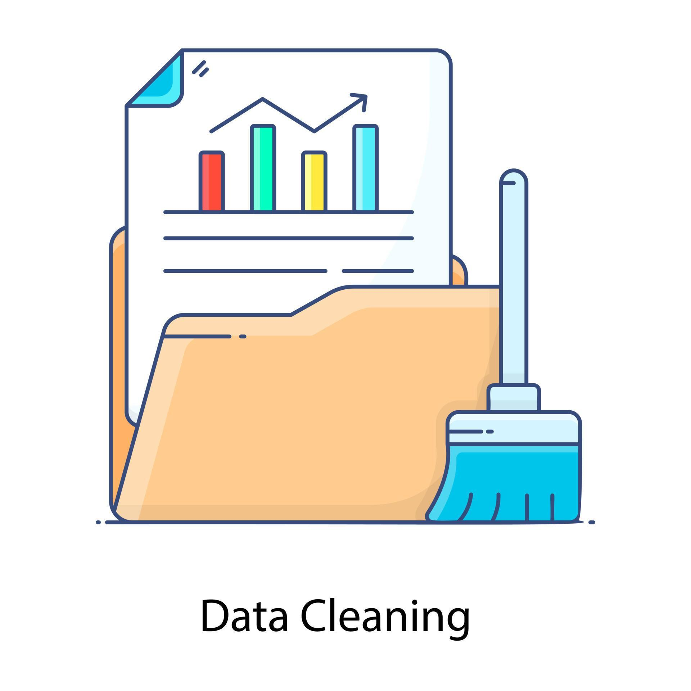

In this project we explored and analyzed global layoffs from 2020 to 2023 during the COVID-19 pandemic, using MYSQL.
This project shows how global economic events (COVID-19) impacted employment trends across different industries and in different companies.

This project involves cleaning a raw layoffs dataset using MySql to improve data quality and prepare it for actual exploratory data analysis. The dataset contained issues such as duplicates, missing values and inconsistent formatting

This project focuses on cleaning and preparing a dataset containing information about united states presidents. The objective was to improve data quality, consistency and usability before analysis.
This project analyzes customer demographics and purchasing behaviour to identify factors that influence bike purchases. The dataset was cleaned, transformed and visualized using Microsoft Excel.